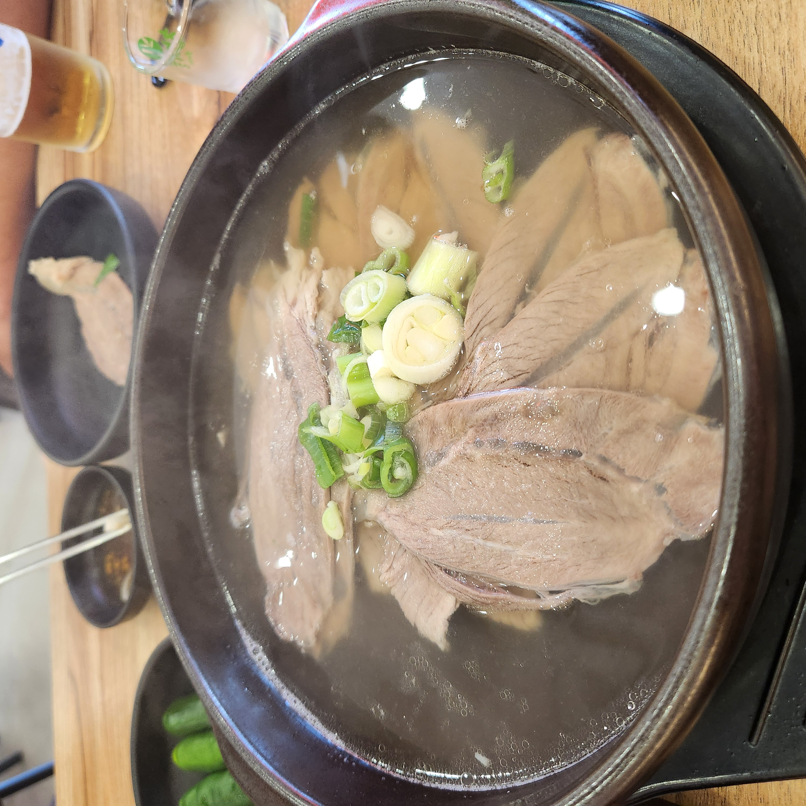
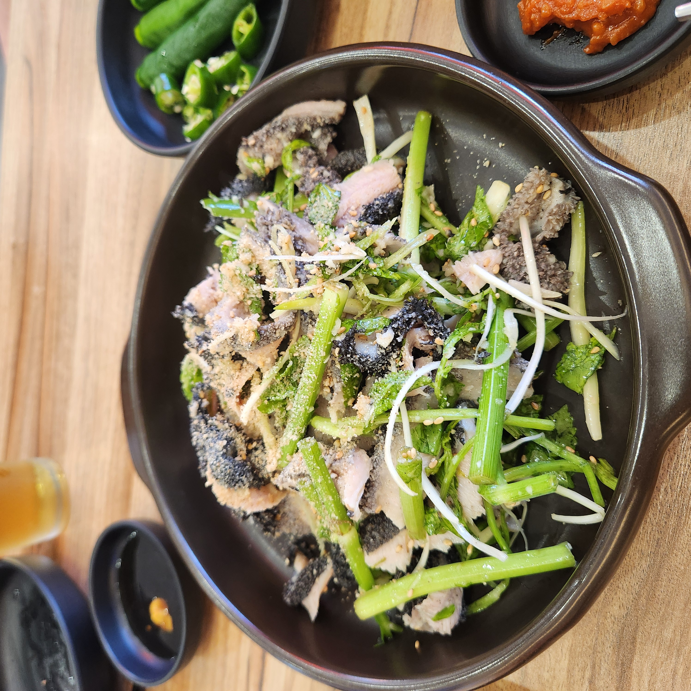
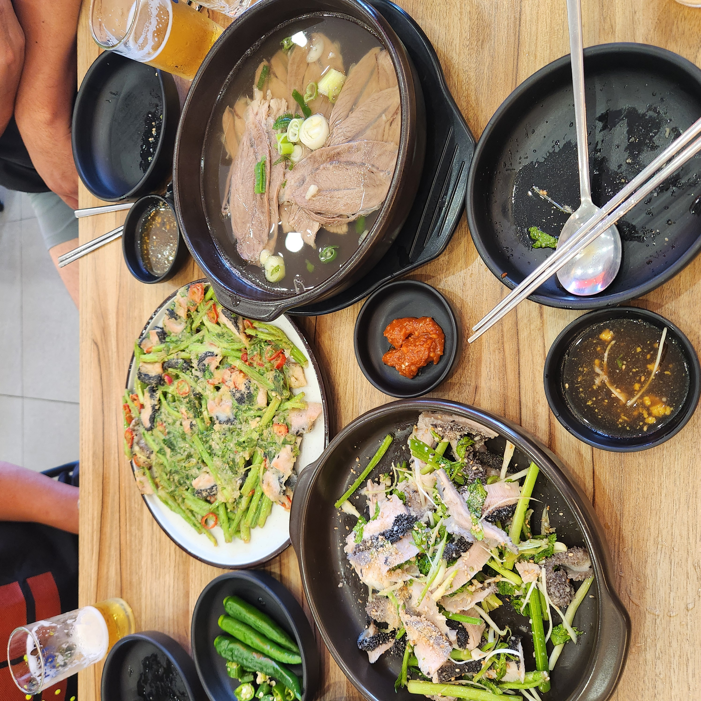
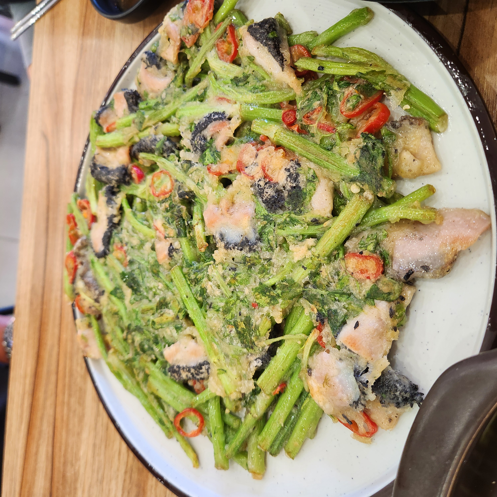
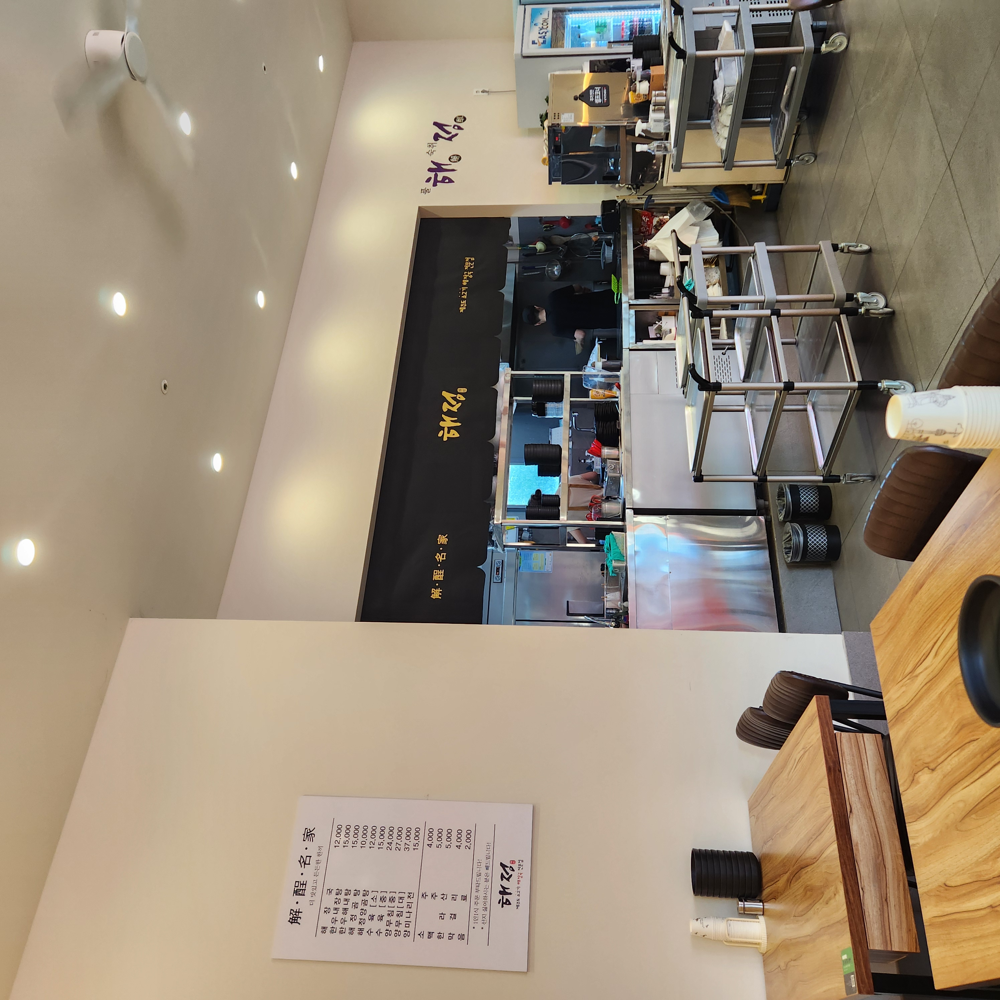

입구에서 돌하르방이 반겨주는 해정해장국 – 제주 감성이 그대로다
해장국이라고 하면 보통 뼈다귀 넣고 얼큰하게 끓인 서울식을 떠올리는데, 김포 고촌에 있는 해정해장국 김포고촌점은 결이 다릅니다. 이 집은 제주식 소고기 해장국을 내는데, 국물이 맑고 진하면서도 속을 확 풀어주는 스타일이에요. 여름에 들렀다가 비린내 없이 개운하고 깔끔한 국물에 반해서, 찍어온 사진과 함께 정직하게 정리해 봅니다.
해정해장국 김포고촌점은 경기 김포시 고촌읍 은행영사정로 25에 있습니다. 김포골드라인 고촌역에서 가깝고 김포IC·수도권제1순환고속도로 바로 옆이라, 지하철로도 차로도 접근이 편했어요. 고촌 신곡리 아파트 단지와 행정복지센터 근처라 동네 상권 한복판입니다.
매장 앞에 주차가 되어 차로 가기에도 부담이 없었습니다. 강화·김포 오가는 길에 해장 겸 한 끼 들르기 좋은 자리예요.

흔한 해장국(선지해장국·뼈해장국)이 얼큰하고 진한 서울식이라면, 제주식 소고기 해장국은 맑은 소고기 육수가 기본입니다. 사골이나 뼈로 뽀얗게 우린 게 아니라 소고기를 푹 삶아 낸 맑고 담백한 국물에, 여기에 선지·우거지·콩나물이 들어가 속을 풀어줍니다.
해정은 매일 새로 육수를 우려낸다고 하는데, 실제로 국물이 텁텁하지 않고 개운했어요. 참고로 메뉴판에 "선지 싫어하시는 분은 빼드립니다"라고 적혀 있어서, 선지가 부담스러우면 빼고 주문할 수 있습니다.

첫 국물을 떠먹었을 때 "해장국이 이렇게 깔끔할 수 있나" 싶었어요. 맑은데도 소고기 감칠맛이 진하게 배어 있어서, 국물만 떠먹어도 속이 풀립니다. 삶은 고기는 질기지 않고 결대로 부드럽게 찢어져 밥이랑 먹기 좋았고요.
테이블에 있는 다진 양념(다대기)을 조금씩 풀면 얼큰한 맛으로도 즐길 수 있어서, 취향대로 간을 맞추기 좋았습니다. 밥은 흑미가 섞인 잡곡밥이라 국물에 말아 먹으니 더 든든했어요.

해장국 한 그릇도 든든하지만, 여럿이 가면 곁들임 메뉴를 시켜 보길 추천해요. 부드럽게 삶아 편으로 썬 수육, 미나리와 새콤하게 무친 양무침, 그리고 양과 미나리를 부쳐낸 양미나리전까지 있어서 상이 금세 푸짐해집니다.
반찬은 과하지 않게 깔끔했습니다. 김치와 다진 양념, 파채 정도로 담백하게 구성돼 해장국 본연의 맛에 집중하게 되는 상차림이었어요.



매장 안은 밝고 넓어서 깔끔한 인상이었어요. 원목 테이블에 자리 간격도 여유 있고, 벽면에는 해정 로고와 "제주도 소고기 해장국 전문점" 문구가 크게 붙어 있어 정체성이 뚜렷합니다. 혼자 해장하러 오기에도, 가족이 식사하러 오기에도 편한 분위기였습니다.

| 👍 좋았던 점 | 맑고 깔끔한 소고기 육수(비린내 없음) · 부드러운 고기 · 선지 빼기 가능 · 밝고 넓은 매장 · 고촌역·김포IC 접근성 · 주차 가능 |
| 🙂 참고할 점 | 얼큰한 맛을 원하면 다대기 추가 · 1인 1식 주문 안내 있음 · 식사·해장 시간대엔 붐빌 수 있음 · 오후 9시 마감 |
정리하면 자극적이지 않고 깔끔한 소고기 해장국을 찾는 분, 김포 고촌에서 든든한 아침·해장 한 끼가 필요한 분께 추천할 만한 곳입니다.

| 상호 | 해정해장국 김포고촌점 (제주식 소고기 해장국 전문점) |
| 주소 | 경기 김포시 고촌읍 은행영사정로 25 1층 102·103호 |
| 전화 | 0507-1409-7120 |
| 영업시간 | 매일 09:30 – 21:00 |
| 메뉴·가격 | 해장국 12,000원 · 한우 내장탕 15,000원 · 해정곰탕 10,000원 · 해정 양곰탕 12,000원 · 수육 (소)15,000·(중)24,000원 · 양무침 (중)27,000·(대)37,000원 · 양미나리전 15,000원 · 한라산 소주 5,000원 |
| 편의·안내 | 매장 앞 주차 · 1인 1식 주문 · 선지 빼기 가능 · 고촌역·김포IC 인근 |